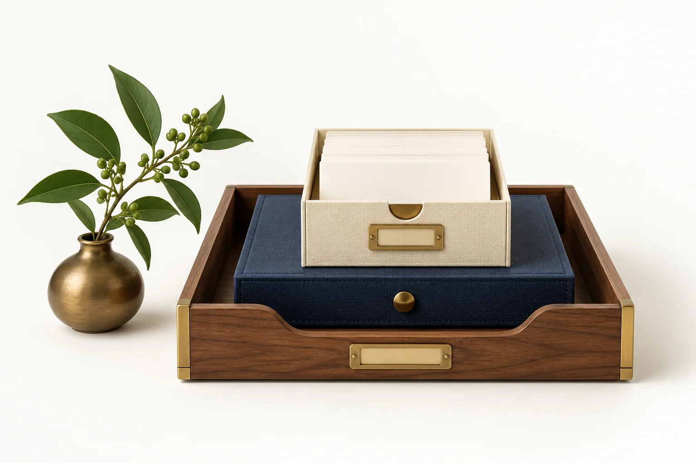
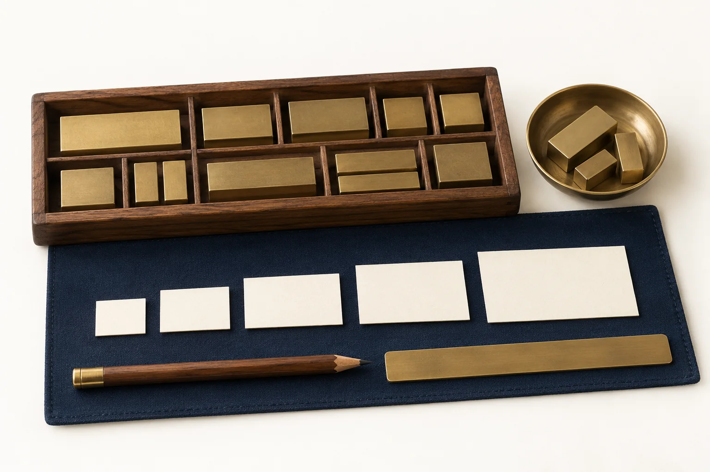
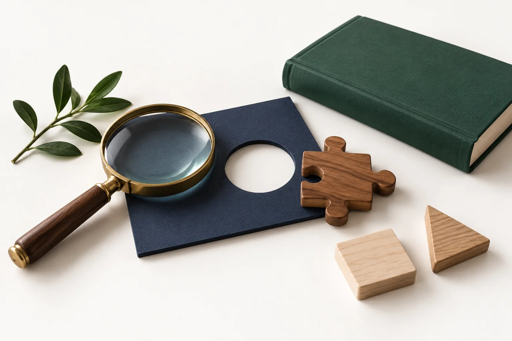
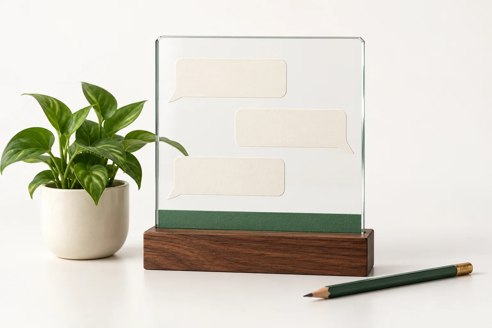
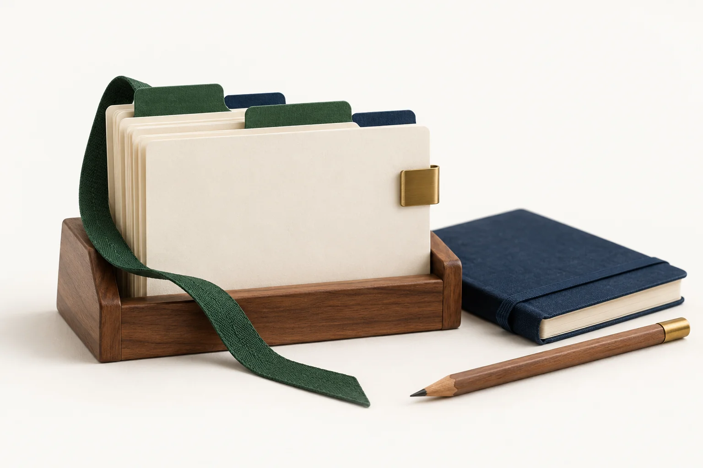
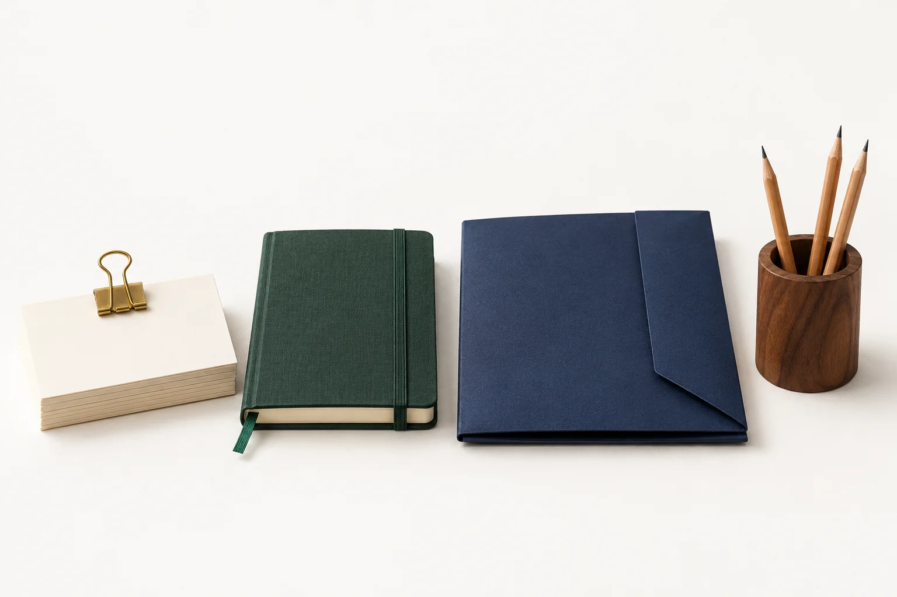
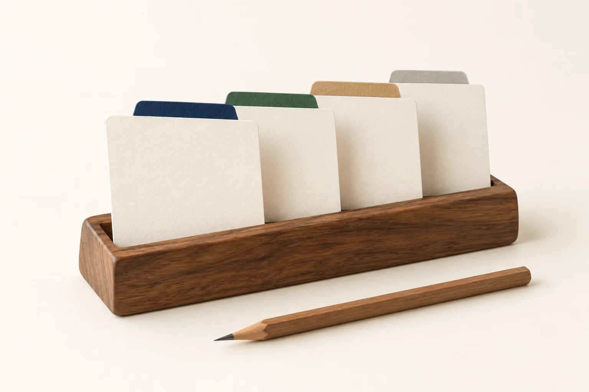

Одна игра на завтра
От идеи до проверенной карточки
За 90 минут подготовим одну игру для своей группы: с понятным действием ребёнка и помощью взрослого. ИИ предложит черновик, а вы проверите и доработаете его перед проведением.
Результат встречи — проверенная карточка игры, которую вы сможете провести.
Модель и чат — разные вещи
Разберём три слова
Искусственный интеллект — общее название разных технологий. LLM, большая языковая модель, работает с языком; чат-сервис даёт нам окно для общения с ней и доступные инструменты.

Возможности чата зависят от сервиса и подключённых инструментов.
Обучение и ответ — два процесса
Уточнение в чате добавляет условия
Во время обучения модель настраивают на примерах данных, чтобы она усваивала закономерности. Во время беседы она использует уже обученные параметры и доступный текст разговора, чтобы построить ответ.
Хранение и использование переписки зависят от правил сервиса.
Ответ создаётся по частям
Получается черновик для проверки
Модель последовательно выбирает следующие фрагменты текста с учётом запроса и контекста. Так может получиться связный ответ, но это ещё не подтверждение его правильности.

Поиск в интернете — отдельный инструмент; наличие чата не означает, что поиск использован.
Уверенный ответ может ошибаться
Красивый текст тоже проверяем
Модель может придумать ссылку, перепутать факт или предложить неподходящее действие. Выдуманные либо искажённые сведения, поданные как достоверные, называют «галлюцинациями».

Нормативную опору сверяют с первоисточником, а игру — с реальными условиями группы.
Четыре места в окне чата
Найдите их в своём сервисе
Для первого запроса достаточно найти новый чат, поле ввода, кнопку отправки и область ответа. На схеме показана общая логика: в вашем сервисе кнопки могут выглядеть иначе.

Выбор модели, файлы, голос и поиск доступны не во всех сервисах и режимах.
Продолжайте и уточняйте беседу
Для новой версии не всегда нужен новый чат
Если вы дорабатываете ту же игру, напишите конкретное уточнение в этой беседе. Для отдельной задачи удобно открыть новый чат и снова указать нужные условия.

Повтор не гарантирует точности. Новый чат не означает удаления прежних данных.
Промпт — понятное задание
Четыре опоры хорошего запроса
Промпт — это запрос, в котором вы объясняете, что нужно получить и при каких условиях. Чем яснее задача, возраст, материалы и формат, тем легче проверить ответ.

Роль необязательна. Условия вашей группы и проверка важнее «волшебной» формулировки.
Соберём запрос из четырёх частей
Пример для детей 3–4 лет
Каждая строка отвечает на один вопрос из конструктора. Замените возраст, условия и материалы на свои, сохранив понятный формат результата.

Даже подробный запрос даёт черновик, который нужно проверить до игры.
Заменяйте общие слова условиями
Так результат легче оценить
Слова «хорошая» и «интересная» не объясняют, какая игра нужна вашей группе. Укажите наблюдаемое действие, возраст и ограничения: тогда будет понятно, подходит ли ответ.
Длина запроса не заменяет ясности. Фраза «по ФГОС» не заменяет сверки с источником.
Исправляйте понятную проблему
Удачную часть можно сохранить
Первый ответ не обязан стать итоговым вариантом. Назовите, что сохранить и что изменить, затем сравните новую версию с вашей задачей.
Самопроверка модели может помочь, но не заменяет проверку педагога.
Без данных детей
С проверкой педагога
Для подготовки опишите общие условия: возраст, количество участников, помещение и материалы. Не передавайте имена, фото, голоса, сведения о здоровье и индивидуальные записи о детях.
Перед проведением решение о пригодности игры принимает педагог.